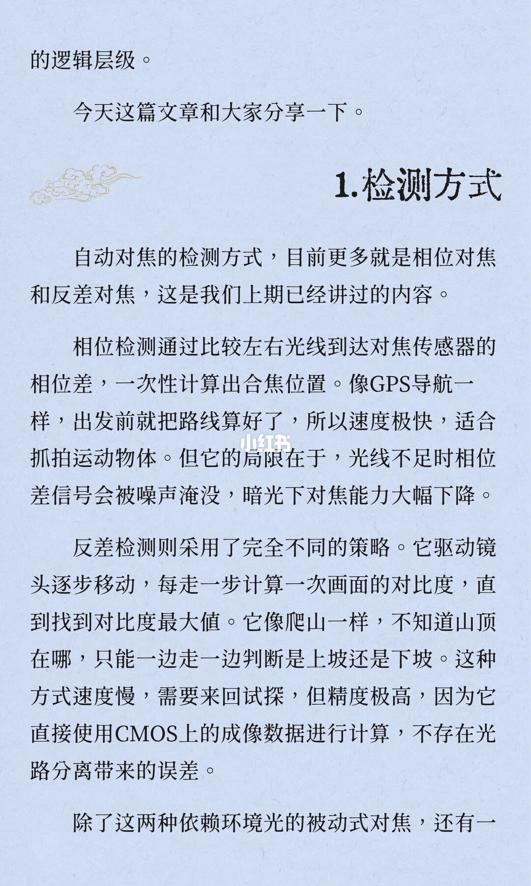
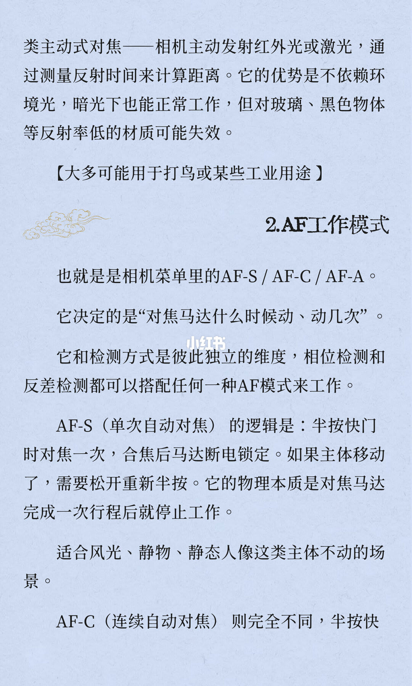
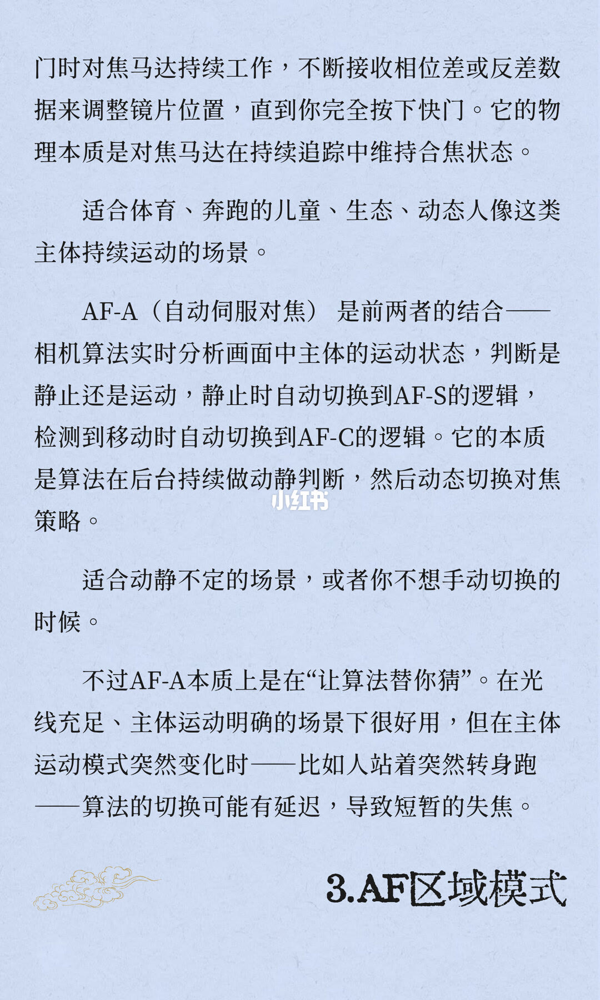
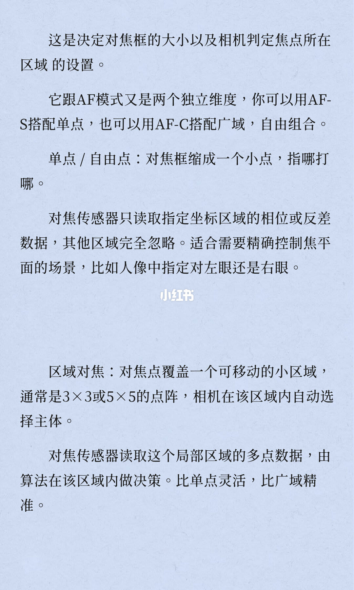
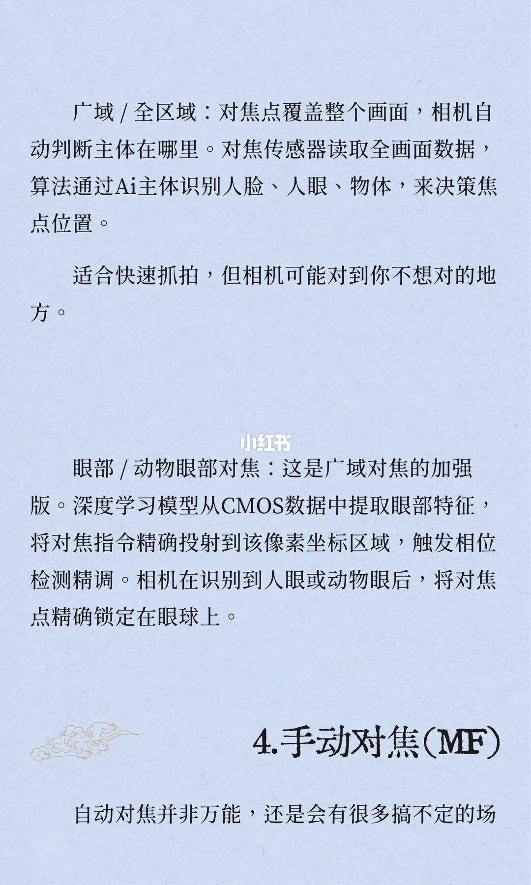
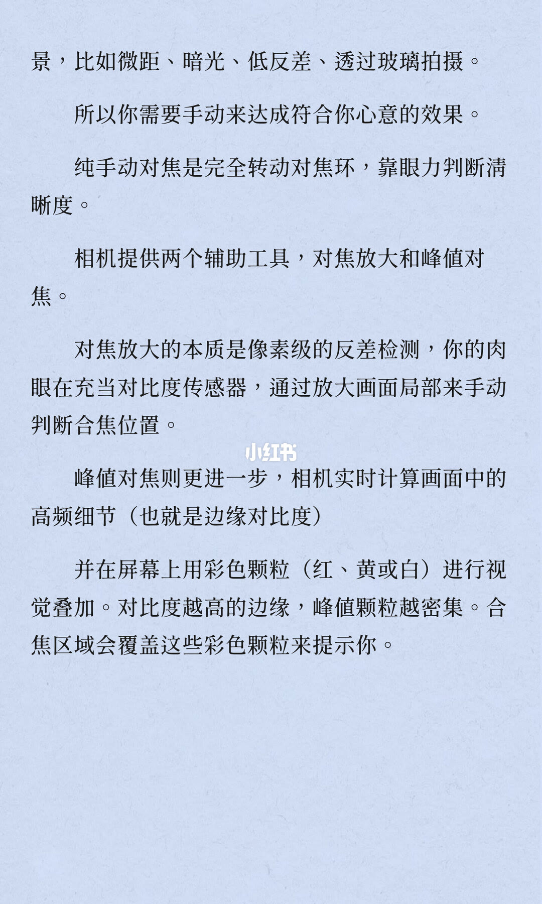
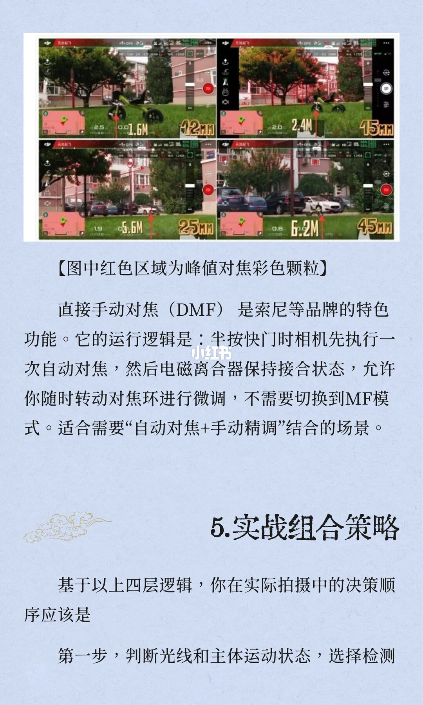
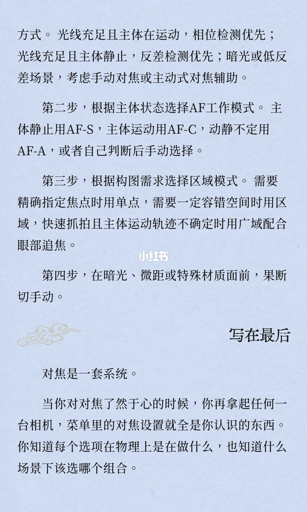

图文实录 · 小红书 · 徐贰懂
详解对焦模式 AF-S / AF-C / AF-A
AF-S、AF-C、AF-A 只决定对焦马达什么时候动、动几次：半按锁一次、半按一直追、或由算法在两者之间切换。相位检测、反差检测、单点、区域、广域、眼部追焦和峰值对焦是另外几层，可以和这三种工作模式搭配，不是同一组菜单里的别名。
1/9
先问这些选项是什么关系
封面标题：详解对焦模式。下面分三行印着 AF-S / AF-C / AF-A。阅读信息：全文2266字 阅读需7分钟。
正文：上期我们讲了相位检测和反差检测的物理原理，那是自动对焦的底层检测手段。但你可能已经发现了，相机菜单里的对焦设置远不止那两样。AF-S、AF-C、AF-A、单点、区域、广域、眼部追焦、峰值对焦……它们之间到底是什么关系？很多人用了好几年相机，都没搞明白这些选项。句子在本页结束，下一页接「的逻辑层级」。
2/9
相位一次算到位，反差边走边找
承接上页：的逻辑层级。今天这篇文章和大家分享一下。
小标题：1.检测方式。自动对焦的检测方式，目前更多就是相位对焦和反差对焦，这是我们上期已经讲过的内容。
相位检测通过比较左右光线到达对焦传感器的相位差，一次性计算出合焦位置。像GPS导航一样，出发前就把路线算好了，所以速度极快，适合抓拍运动物体。但它的局限在于，光线不足时相位差信号会被噪声淹没，暗光下对焦能力大幅下降。
反差检测则采用了完全不同的策略。它驱动镜头逐步移动，每走一步计算一次画面的对比度，直到找到对比度最大值。它像爬山一样，不知道山顶在哪，只能一边走一边判断是上坡还是下坡。这种方式速度慢，需要来回试探，但精度极高，因为它直接使用CMOS上的成像数据进行计算，不存在光路分离带来的误差。
除了这两种依赖环境光的被动式对焦，还有一。句子在页末截断。

3/9
主动测距，以及马达动几次
承接上页：类主动式对焦——相机主动发射红外光或激光，通过测量反射时间来计算距离。它的优势是不依赖环境光，暗光下也能正常工作，但对玻璃、黑色物体等反射率低的材质可能失效。括号注：【大多可能用于打鸟或某些工业用途】。
小标题：2.AF工作模式。下一行按图上印的是：也就是是相机菜单里的AF-S / AF-C / AF-A。它决定的是“对焦马达什么时候动、动几次”。它和检测方式是彼此独立的维度，相位检测和反差检测都可以搭配任何一种AF模式来工作。
AF-S（单次自动对焦）的逻辑是：半按快门时对焦一次，合焦后马达断电锁定。如果主体移动了，需要松开重新半按。它的物理本质是对焦马达完成一次行程后就停止工作。适合风光、静物、静态人像这类主体不动的场景。
AF-C（连续自动对焦）则完全不同，半按快。句子在页末截断。

4/9
一直追，或让算法猜动静
承接上页：门时对焦马达持续工作，不断接收相位差或反差数据来调整镜片位置，直到你完全按下快门。它的物理本质是对焦马达在持续追踪中维持合焦状态。适合体育、奔跑的儿童、生态、动态人像这类主体持续运动的场景。
AF-A（自动伺服对焦）是前两者的结合——相机算法实时分析画面中主体的运动状态，判断是静止还是运动，静止时自动切换到AF-S的逻辑，检测到移动时自动切换到AF-C的逻辑。它的本质是算法在后台持续做动静判断，然后动态切换对焦策略。适合动静不定的场景，或者你不想手动切换的时候。
不过AF-A本质上是在“让算法替你猜”。在光线充足、主体运动明确的场景下很好用，但在主体运动模式突然变化时——比如人站着突然转身跑——算法的切换可能有延迟，导致短暂的失焦。
页末大标题：3.AF区域模式。

5/9
对焦框是另一层
这是决定对焦框的大小以及相机判定焦点所在区域的设置。它跟AF模式又是两个独立维度，你可以用AF-S搭配单点，也可以用AF-C搭配广域，自由组合。
单点 / 自由点：对焦框缩成一个小点，指哪打哪。对焦传感器只读取指定坐标区域的相位或反差数据，其他区域完全忽略。适合需要精确控制焦平面的场景，比如人像中指定对左眼还是右眼。
区域对焦：对焦点覆盖一个可移动的小区域，通常是3×3或5×5的点阵，相机在该区域内自动选择主体。对焦传感器读取这个局部区域的多点数据，由算法在该区域内做决策。比单点灵活，比广域精准。

6/9
全画面交给识别，眼部再收紧
广域 / 全区域：对焦点覆盖整个画面，相机自动判断主体在哪里。对焦传感器读取全画面数据，算法通过Ai主体识别人脸、人眼、物体，来决策焦点位置。适合快速抓拍，但相机可能对到你不想对的地方。
眼部 / 动物眼部对焦：这是广域对焦的加强版。深度学习模型从CMOS数据中提取眼部特征，将对焦指令精确投射到该像素坐标区域，触发相位检测精调。相机在识别到人眼或动物眼后，将对焦点精确锁定在眼球上。
页末大标题：4.手动对焦（MF）。正文起句：自动对焦并非万能，还是会有很多搞不定的场。句子在页末截断。

7/9
放大靠眼睛，峰值靠彩色颗粒
承接上页：景，比如微距、暗光、低反差、透过玻璃拍摄。所以你需要手动来达成符合你心意的效果。
纯手动对焦是完全转动对焦环，靠眼力判断清晰度。相机提供两个辅助工具，对焦放大和峰值对焦。
对焦放大的本质是像素级的反差检测，你的肉眼在充当对比度传感器，通过放大画面局部来手动判断合焦位置。
峰值对焦则更进一步，相机实时计算画面中的高频细节（也就是边缘对比度），并在屏幕上用彩色颗粒（红、黄或白）进行视觉叠加。对比度越高的边缘，峰值颗粒越密集。合焦区域会覆盖这些彩色颗粒来提示你。

8/9
四格峰值，以及半按后还能拧环
上半是四格同一处户外画面的拍摄界面，红色颗粒标在不同远近的物体上。图注印的是：【图中红色区域为峰值对焦彩色颗粒】。四格大字大致能读成 1.6M 配 12mm、2.4M 配 15mm、5.6M 配 25mm、6.2M 配 45mm。界面上的小字、状态条和对焦模式图标看不清，无法确认。
直接手动对焦（DMF）是索尼等品牌的特色功能。它的运行逻辑是：半按快门时相机先执行一次自动对焦，然后电磁离合器保持接合状态，允许你随时转动对焦环进行微调，不需要切换到MF模式。适合需要“自动对焦+手动精调”结合的场景。
小标题：5.实战组合策略。基于以上四层逻辑，你在实际拍摄中的决策顺序应该是：第一步，判断光线和主体运动状态，选择检测。句子在页末截断。

9/9
四步选完，再看它是不是一套系统
承接上页：方式。光线充足且主体在运动，相位检测优先；光线充足且主体静止，反差检测优先；暗光或低反差场景，考虑手动对焦或主动式对焦辅助。
第二步，根据主体状态选择AF工作模式。主体静止用AF-S，主体运动用AF-C，动静不定用AF-A，或者自己判断后手动选择。
第三步，根据构图需求选择区域模式。需要精确指定焦点时用单点，需要一定容错空间时用区域，快速抓拍且主体运动轨迹不确定时用广域配合眼部追焦。
第四步，在暗光、微距或特殊材质面前，果断切手动。
标题：写在最后。对焦是一套系统。当你对对焦了然于心的时候，你再拿起任何一台相机，菜单里的对焦设置就全是你认识的东西。你知道每个选项在物理上是在做什么，也知道什么场景下该选哪个组合。

汇总
三层设置分开选，AF-A 只是替你猜
结论
AF-S 半按对一次就锁，AF-C 半按期间马达一直追，AF-A 让算法在静止和运动之间切换。检测方式、对焦区域、手动辅助是另外三层，第 9 页把实拍收成先选检测、再选工作模式、再选区域、暗光微距再切手动。
支撑页
相位、反差在 2/9，主动式测距在 3/9。AF-S 在 3/9，AF-C 与 AF-A 在 4/9。单点和区域在 5/9，广域和眼部在 6/9。手动、放大、峰值在 7/9，四格示意和 DMF 在 8/9。四步顺序在 8/9 到 9/9。
边界
九页没有印出任何具体菜单路径，不能补机身按键。主动式那句用途是作者括号里的判断。区域点阵写的是「通常是3×3或5×5」。眼部对焦只写触发相位检测精调。DMF 只点名索尼等品牌和电磁离合器。第 8 页界面小字无法确认，大字焦距和距离只作大致读数。封面「全文2266字」是页面自述。第 3 页印着「也就是是」。上期相位和反差的物理推导不在这九页里。